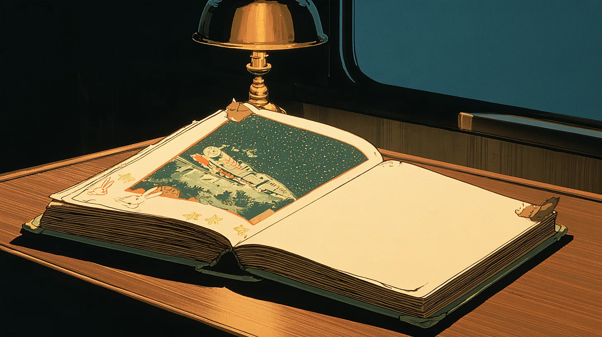
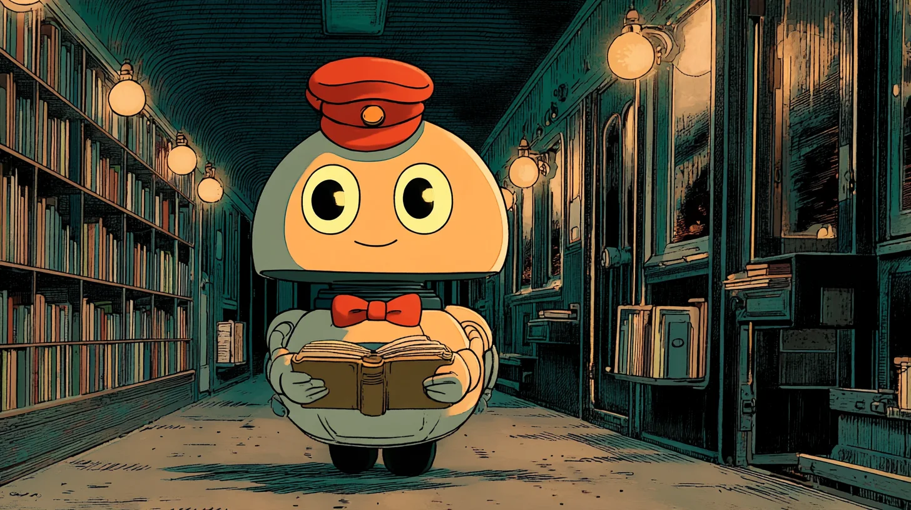

부산역 3번 승강장, 밤 열한 시.
표 대신 꼬리표 한 장을 받는다.
꼬리표에 적는 건 행선지가 아니라 마음의 짐 하나다. 「면접이 걱정돼요」, 「고백할까 말까 사흘째 고민 중」. 짐을 트렁크에 넣어 수하물칸에 맡기면, 런던행 밤기차가 천천히 승강장을 떠난다.
런던까지는 꼬박 하루. 열세 개의 역마다 동화 속 사람들이 차례로 오른다. 토끼 간을 또 놓친 별주부, 아버지를 아버지라 부르지 못하는 홍길동, 낮의 모습을 들킬까 두려운 백조 오데트. 그들도 저마다 트렁크 하나씩을 들고 있다.
당신이 할 일은 많지 않다. 맞은편 자리에 앉아 이야기를 듣고, 간식을 건네고, 내리는 역에서 손을 흔들어 주는 것. 그사이 오래된 동화책에서 찢겨 나간 페이지가 한 조각씩 모인다.
그리고 종착역 런던. 수하물 보관소의 로봇 포터가,스무 해 전에 맡겨 둔 또 하나의 짐을 꺼내 온다.


수하물칸을 지키는 로봇 포터